活躍した名手たち
1986年大会名手たち
| 写真 | 氏名 | 生年月日 国籍 |
主な活躍 |
|---|---|---|---|
| 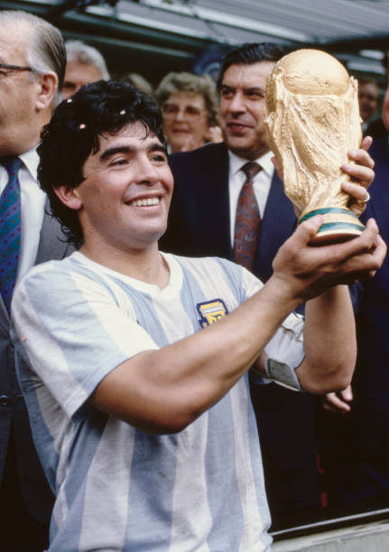 | ディエゴ・マラドーナ | 1960年10月30日 アルゼンチン |
本大会でゴールデンボール賞を獲得し、5得点5アシストという成績を残した。準々決勝のイングランド戦では「神の手ゴール」、 「5人抜きゴール」などの数々の メキシコ大会は「マラドーナのための大会」と言われている。 |
| 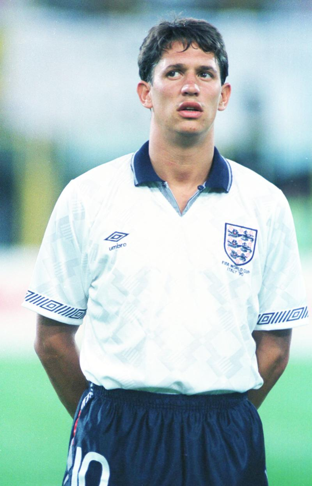 | ギャリー・リネカー | 1960年11月30日 イングランド |
本大会で6得点を挙げて得点王に輝き、同年のバロンドール投票で第2位に選ばれた。本大会終了後もイングランド代表として プレイを続け、最終的にはイングランド 通算歴代2位の48得点を決めたレジェンドストライカー。 |
| 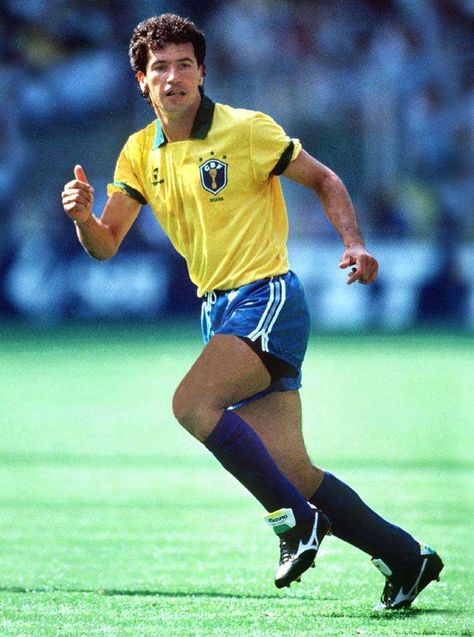 | カレカ | 1960年10月5日 ブラジル |
本大会ブラジルのエースストライカーとしてチームを牽引した。準々決勝戦ではフランス戦のゴールを含む5ゴールとチームに 大きく貢献したが、惜しくも得点王に 1ゴール届かず、また準々決勝戦でフランスに敗れ優勝を逃した。 |
| 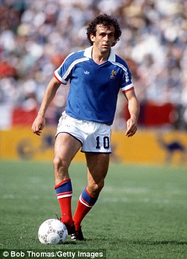 | ミシェル・プラティニ | 1955年6月21日 フランス |
1990年代のジネディーヌ・ジダンと共にフランスサッカー史に名を残す名手である。本大会のグループリーグでは精彩を欠いた プレイが続いたが、決勝トーナメント 1回戦イタリア戦では2得点を決め勝利に貢献した、準々決勝戦ではブラジルを破り準決勝に進んだが、ドイツの堅守を崩すことが出来ず決勝進出を逃した。 |
1990年大会名手たち
| 写真 | 氏名 | 生年月日 国籍 |
主な活躍 |
|---|---|---|---|
| 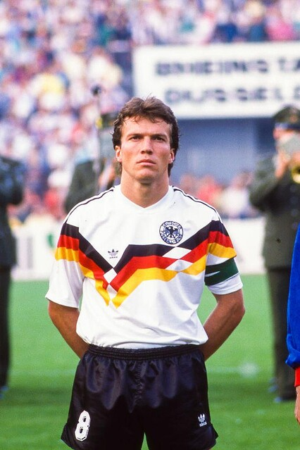 | ロータ・マテウス | 1961年3月21日 ドイツ |
本大会のゴールデンボー賞を獲得し、ドイツのキャプテンとして同国を優勝へ導いた。またワールドカップ優勝後バロンドールと fifa最優秀賞を受賞した。 本大会では4得点を決めるだけでなく、相手エースを抑えるなど守備面でも貢献した。マテウスは20年間でドイツ代表に150試合出場しこの記録はドイツ代表 歴代最多出場記録である。 |
| 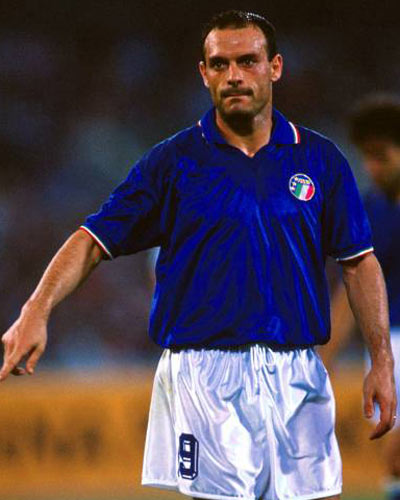 | サルヴァトーレ・スキラッチ | 1964年12月1日 イタリア |
本大会の得点王であり、7試合で6得点という記録を残した。本大会当初はスターティングメンバーではなかったが、第3戦のソビエト戦 から先発出場し 3位決定戦イングランド戦では1ゴール1アシスト記録イタリアを3位に導いた。また、1994年から日本のクラブチームジュピロ磐田でプレイしていたことでも 有名である。 |
| 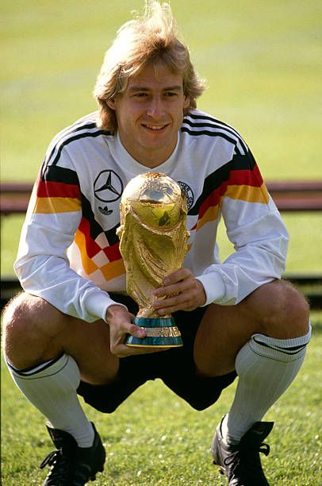 | ユルゲン・クリスマン | 1964年10月5日 ドイツ |
本大会では3得点を記録しドイツ優勝に貢献の貢献した。特にベスト16で対戦した宿敵オランダ戦では1ゴール決め決定的な仕事をした。 ドイツ代表の通算成績は 108試合47ゴールと多くのゴールを決め長年ドイツ代表の牽引した。引退した後は監督でも活躍しており、2006年には同国の監督としてドイツ代表を3位に導き、ドイツ代表 退任後はアメリカ代表の監督も務めるなど監督としても長年活躍した。 |
| 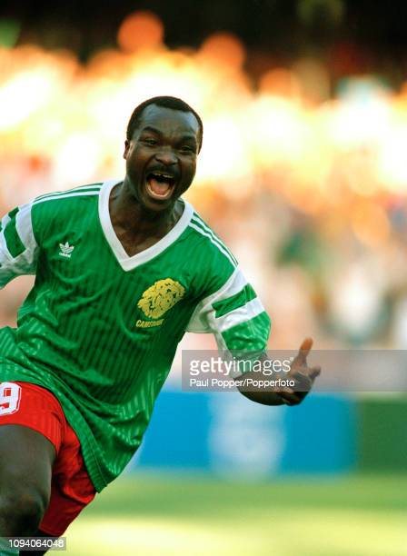 | ロジェ・ミラ | 1952年5月20日 カメルーン |
本大会で4得点挙げカメルーン代表の躍進を支えた中心選手である。また、同選手がゴール決めた際コーナーポストを囲んで歓喜の踊りと共に 世界中のサッカーファンに鮮烈な印象を残した。 |
1994年大会名手たち
| 写真 | 氏名 | 生年月日 国籍 |
主な活躍 |
|---|---|---|---|
| 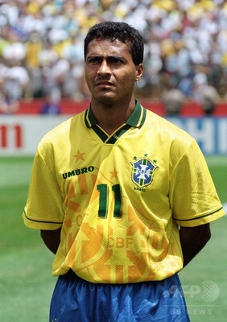 | ローマリオ | 1966年1月29日 ブラジル |
本大会のゴールデンボール賞受賞選手であり、同大会で5得点決めブラジル代表優勝に貢献した。また、同年のfifa最優秀選手にも選出されている。代表通算記録は70試合 55得点と1試合の平均得点率が0.78とすごい数値を残している。引退後は政治家としても活躍しており、スポーツの分野だけでなく、違う分野でも影響力のある選手である。 |
| 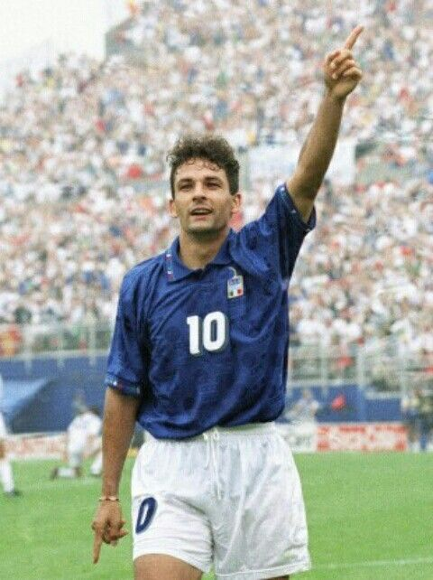 | ロベルト・バッジョ | 1967年2月18日 イタリア |
本大会のイタリア代表の中心選手であり、同国の準優勝に大きく貢献した。大会前の怪我の影響もあり、グループリーグでは思うようなプレイが出来ず批判を浴びていたが、 決勝トーナメント戦が始まると、1回戦、準々決勝、準決勝と毎試合得点を挙げ、酷評から一転して救世主扱いとなった。しかし決勝のブラジル戦ではpk戦でpkを外してしまい イタリアの優勝を逃してしまった。 |
| 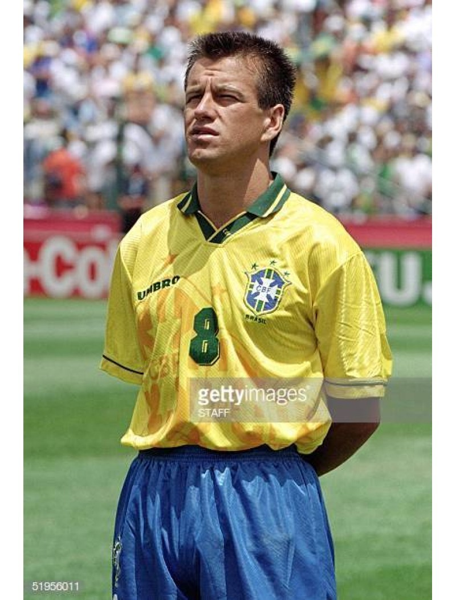 | ドゥンガ | 1963年10月31日 ブラジル |
本大会の試合全て出場し、ブラジル代表のキャプテンとしてブラジル優勝に貢献した。また、決勝ではpk戦の最後のキッカーとしてpkを成功させ、決定的な仕事を果たした。 引退後は監督として活動しており、同国の監督として2010ワールドカップを経験している。 |
| 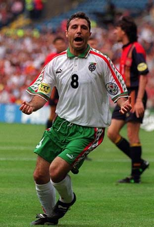 | フリスト・ストイチコフ | 1966年2月8日 ブルガリア |
本大会では6得点挙げ得点王となりブルガリアののべスト4に大きく貢献した選手である。また、同年のバロンドールも受賞している。代表通算成績は83試合38得点である。 |
1998年大会名手たち
| 写真 | 氏名 | 生年月日 国籍 |
主な活躍 |
|---|---|---|---|
| 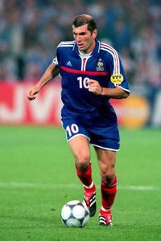 | ジネディーヌ・ジダン | 1972年6月23日 フランス |
地元開催で行われたワールドカップで決勝のブラジル代表戦で2ゴールを挙げてフランス代表を優勝に導いた中心選手。同年のバロンドール、fifa最優秀選手賞も受賞した。 |
| 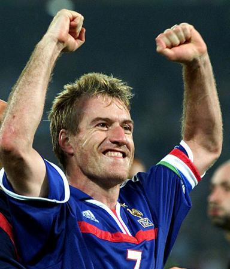 | ディディエ・デシャン | 1968年10月15日 フランス |
フランス代表のキャプテンとして、地元開催での優勝に大きく貢献した選手。代表の通算成績は103試合、4得点と長年代表チームでプレイを続け、ワールドカップ優勝2年後に 開催されたEURO2000もキャプテンとしてチームの優勝に貢献しその後に代表の舞台から退いた。現役引退後は監督として活躍しており、2018ロシアワールドカップでは同国の監督 を務めており、見事優勝に導き監督してもワールドカップ優勝を経験している。 |
| 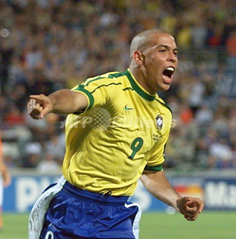 | ロナウド | 1976年9月22日 ブラジル |
本大会のゴールデンボール賞受賞選手であり、ブラジルの準優勝に大きく貢献した選手。前回大会も代表には選出されていたものの、当時絶対的エースローマリオがスターティング メンバーに選出されていたためあまり目立たなかったが、本大会では4得点を挙げチームを決勝進出に導いた。しかし決勝戦の前日に胃痙攣に襲われ、コンデションが悪い状態でプレイ し、満足なプレーが出来ず、決勝戦でフランスに0-3で敗れてしまった。 |
| 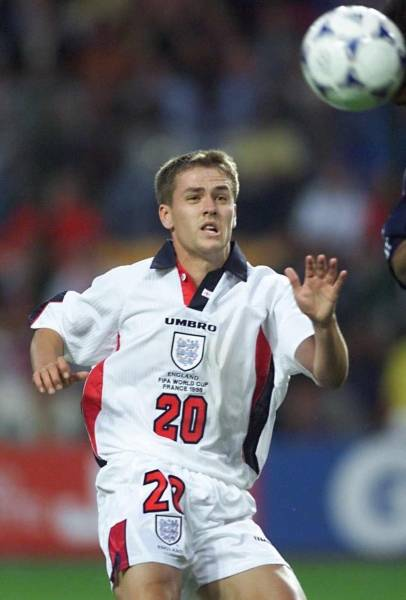 | マイケル・オーウェン | 1979年12月8日 イングランド |
1998当時イングランド史上最年少でイングランド代表デビューを飾り、最年少ゴールを記録し世界驚かせた選手である。圧巻のプレイは決勝トーナメント一回戦のアルゼンチン戦で 相手ディフェンダーを次々の抜き去りゴールを決めたシーンである。晩年は怪我などの影響もあり思うようなプレーを続けることは出来なかったが、それでも代表通算成績は89試合40得点と 見事な記録を残している。 |
2002年大会名手たち
| 写真 | 氏名 | 生年月日 国籍 |
主な活躍 |
|---|---|---|---|
| 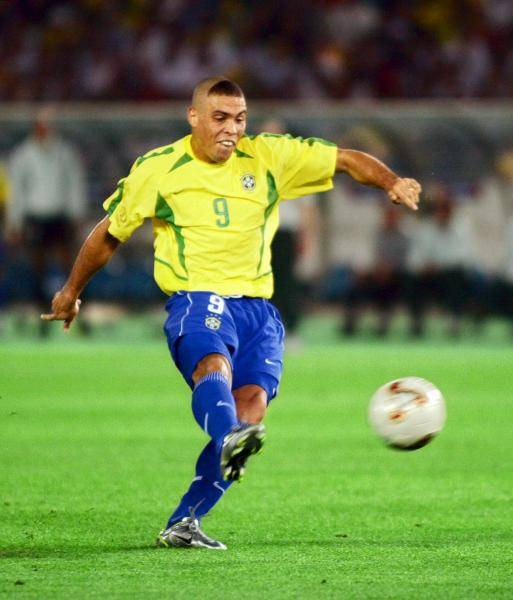 | ロナウド | 1976年9月22日 ブラジル |
前回大会に引き続きブラジル代表のエースとしてブラジル優勝に大きく貢献した選手。大会直前に膝の怪我から復帰直後であったため、コンディション不足が不安視されいたが、準々決勝イングランド戦以外の 試合ですべてゴール決めており、決勝戦のドイツ戦を含む計8ゴールあげ得点王にも輝いた。また同年のfifa最優秀選手賞とバロンドール賞を受賞しており2002年ロナウドの年となった。代表の通算成績は98試合62 得点である。 |
| 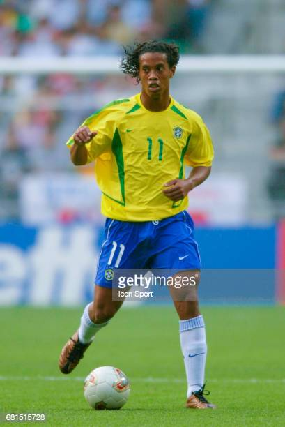 | ロナウジーニョ | 1980年3月21日 ブラジル |
ブラジル代表のロナウド、リバウドとチームの攻撃を牽引した選手。大会を通じて5試合出場し、2ゴールの記録を残し、更にいくつかの重要なアシストをしチームに大きく貢献した。 圧巻のプレイは準々決勝イングランド戦、35メートルの距離から直接フリーキックを蹴り見事にボールをゴール中に入れ込んだ。 |
| 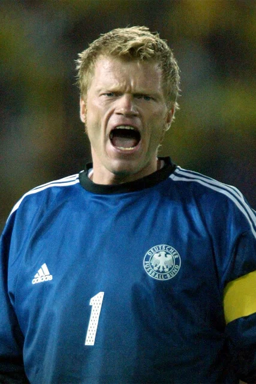 | オリバーカーン | 1969年6月15日 ドイツ |
本大会のドイツ代表のキャプテンとして同国を準優勝に導いた選手である。彼自身の強烈なパーソナリティもあり多くのファンから愛された選手でもあった。またドイツサッカー界だけでなく、 ドイツ社会でも発言力を持っていた。本大会ではファインセーブをを連発し、相手にゴールを許さなかったが、決勝戦のブラジル戦では相手シュートのボール処理を誤りゴール許してしまう苦い経験を 味わった。 |
| 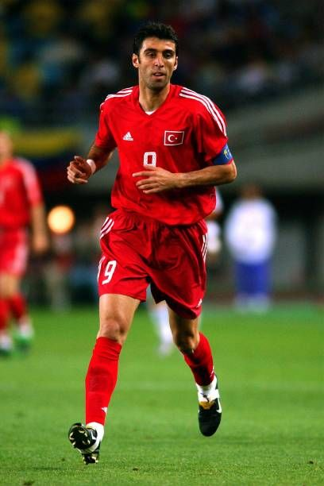 | ハカン・シュキュエル | 1971年9月1日 トルコ |
本大会の台風の目となったトルコ代表の中心選手。3位決定戦韓国戦では最短時間得点記録を塗り替える開始わずか10.8秒で得点を決めた。代表通算記録は112試合51ゴールとトルコ代表最多得点 記録保持者である。 |
2006年大会名手たち
| 写真 | 氏名 | 生年月日 国籍 |
主な活躍 |
|---|---|---|---|
| 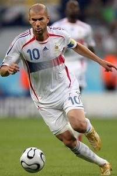 | ジネディーヌ・ジダン | 1972年6月23日 フランス |
1998年ワールドカップ以来の優勝目指したフランス代表の中心選手。大会後の引退を公言して臨んだ本大会であったが、序盤こそ低調であったが、大会が進むにつれ本来のプレーを取り戻し、 フランスを決勝進出まで導いた。決勝ではパネンカと言われるチップキックでPKを決めたが、相手ディフェンダーのマルコ・マテラッツィの挑発に乗ってしまい、相手選手に頭突きを行い現役最後の試合を レッドカードを受けて終了した。決勝戦で退場はしたものの、本大会の活躍が認められ、ゴールデンボール賞を受賞している。 |
| 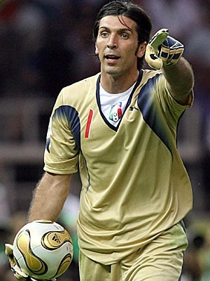 | ジャンルイジ・ブッフォン | 1978年1月28日 イタリア |
本大会のイタリア代表の正ゴールキーパーであり、鉄壁の守備を構築しイタリアの優勝に大きく貢献した選手。本大会では7試合を通じて2点しかゴールを許さず、さらに決められた2点もオウンゴールと PKであったため、試合の流れがゴールを許さず大会を終えることが出来た。国際サッカー歴史統計連盟が発表した「21世紀のベストGK」では1位に選出されており、とても高い評価受けている。また、イタリア 代表では約20年間プレーをしており、代表通算記録は176試合である。 |
| 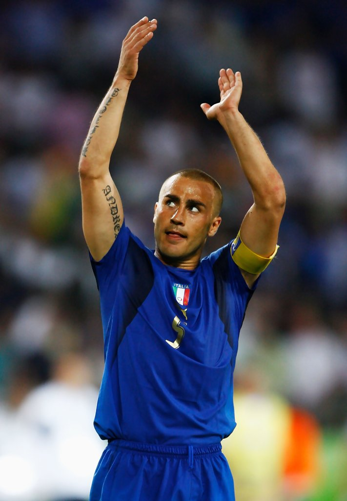 | ファビオ・カンナヴァーロ | 1973年9月13日 イタリア |
本大会のイタリア代表のキャプテンとしてイタリア代表の優勝に大きく貢献した選手。本大会では7試合すべてフル出場を果たしており、キーパーのジャンルイジ・ブッフォンと共に鉄壁のディフェンスを構築した。 大会後はワールドカップの活躍が認められ、バロンドール賞を受賞している。 |
| 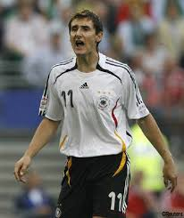 | ミロスラフ・クローゼ | 1978年6月9日 ドイツ |
本大会のドイツ代表のエースストライカーとしてチームの3位に大きく貢献した選手。本大会では7試合で5得点を決め得点王に輝くだけでなく、アシストも記録するなど得点以外でもチームに貢献した。 クローゼは同国の歴代最多得点記録者だけでなく、ワールドカップにおける通算得点数も歴代NO1など数々の記録を残し現役から退いた。 |
2010年大会名手たち
| 写真 | 氏名 | 生年月日 国籍 |
主な活躍 |
|---|---|---|---|
| 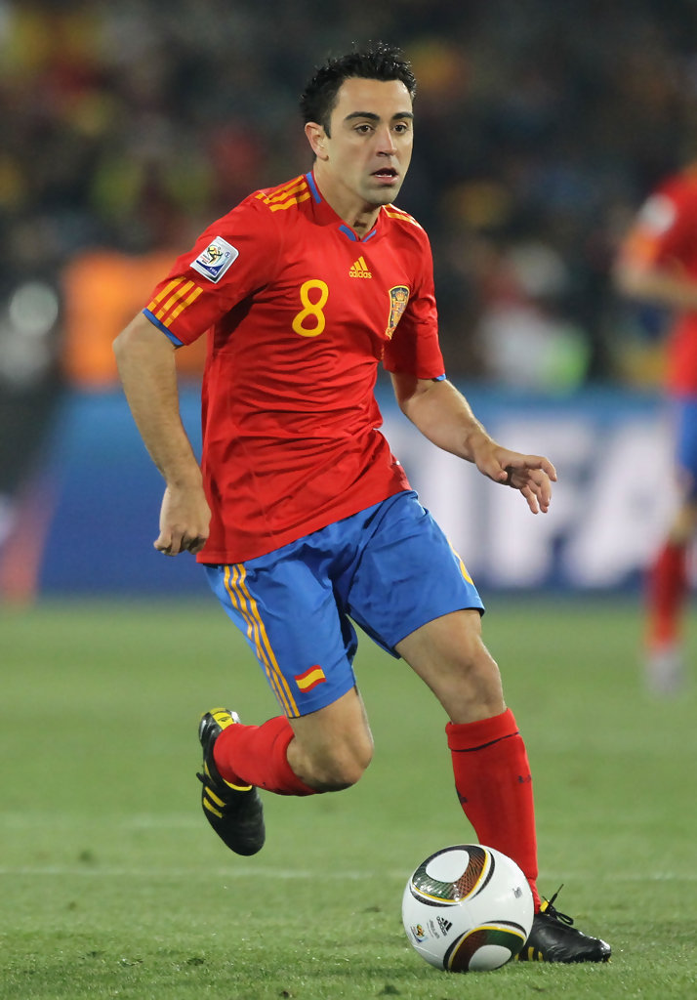 | シャビ・エルナンデス | 1980年1月25日 スペイン |
スペインのワールドカップ初優勝に大きく貢献した選手。本大会ではチームメートのアンドレス・イニエスタ、セルヒオ・ブスケツ、シャビ・アロンソと共に黄金の中盤を構築し、華麗なパスワークサッカーで 世界のサッカーファンを魅了した。本大会の2年後に開催されたEURO2012でも同メンバーで優勝を果たしている。代表通算成績は133試合13ゴールである。 |
| 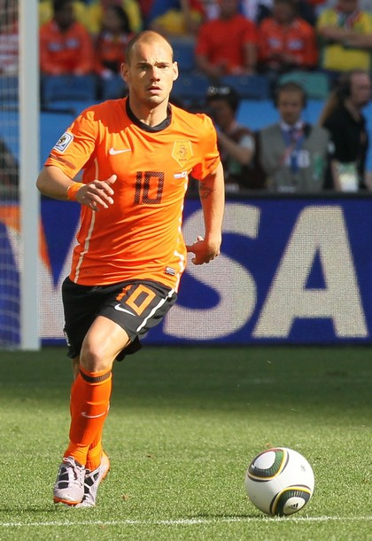 | ウェズレイ・スナイデル | 1984年6月9日 オランダ |
司令塔としてオランダ準優勝に大きく貢献した選手。特に準々決勝ブラジル戦では2ゴールを決める活躍などもあり中盤の選手ながら得点王に輝いている。同年所属クラブのインテルでUEFAチャンピオンズリーグを制覇して いたこともあり、FIFAバロンドール賞の受賞を期待されていたが、リオネル・メッシが選ばれたことにより、受賞することが出来なかった。代表通算成績は134試合31ゴールである。 |
| 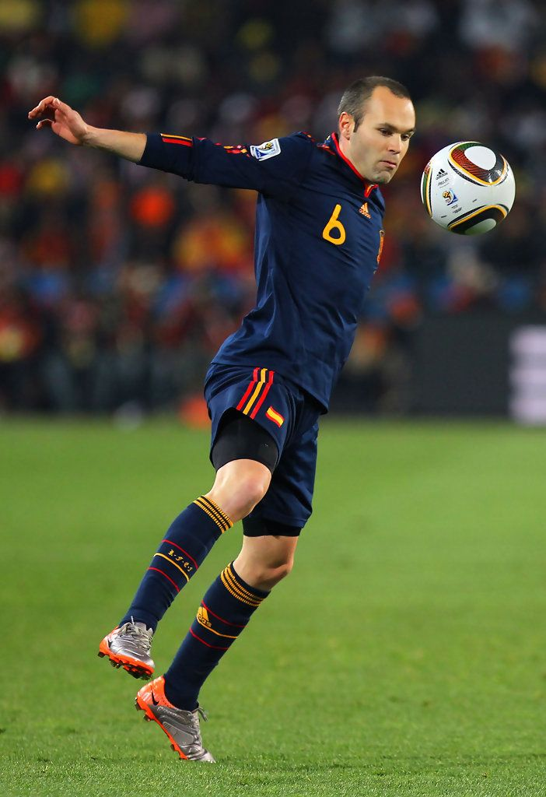 | アンドレス・イニエスタ | 1984年9月13日 スペイン |
チームメートのシャビ・エルナンデス共にスペイン代表の中盤を牽引し、スペイン代表のワールドカップ初優勝に大きく貢献した選手。特に決勝のオランダ戦では相手選手のレッドカードの誘発や決勝弾あげるなどの活躍があり、 マンオブザマッチに輝いている。代表通算成績は131試合13ゴールである。 |
| 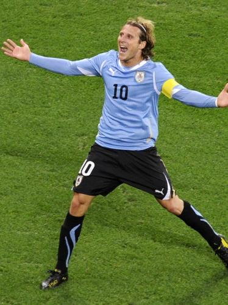 | ディエゴ・フォルラン | 1979年5月19日 ウルグアイ |
ウルグアイ代表のエースストライカーとしてウルグアイの40年ぶりのベスト4に大きく貢献した選手。本大会では7試合で5ゴール決め、得点王に輝いている。また、得点王だけでなく、FIFAゴールデンボール賞を獲得しており、 フォルランに自身にとっても充実した大会となった。代表通算成績は112試合36ゴールである。 |
2014年大会名手たち
| 写真 | 氏名 | 生年月日 国籍 |
主な活躍 |
|---|---|---|---|
| 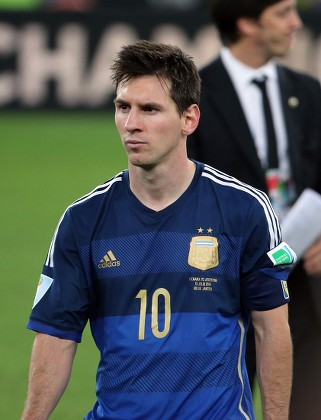 | リオネル・メッシ | 1987年6月24日 アルゼンチン |
アルゼンチン代表の主将としてアルゼンチンを準優勝に導いた選手。FIFAバロンドール賞を複数回受賞や所属クラブのFCバルセロナで数々のタイトルを獲得してきたが、代表チームのタイトルだけ獲得できていない中、 迎えた本大会であった。活躍は7試合4ゴール3アシストと大活躍し、本体大会のFIFAゴールデンボール賞を獲得したが、決勝のドイツ戦ではマリオ・ゲッツェに点を決められ、準優勝という結果に終わり、またしても代表の タイトルを手にすることが出来なかった。 |
| 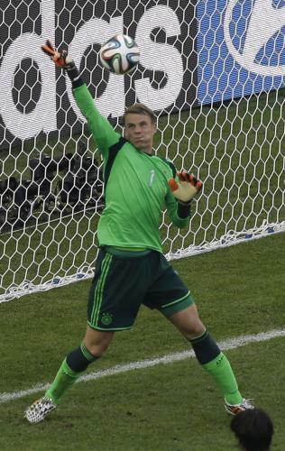 | マヌエル・ノイアー | 1986年3月27日 ドイツ |
ドイツ代表の守護神として活躍し、ドイツのワールドカップ優勝に大きく貢献した選手。彼のプレースタイルは従来のゴールキーパーとは異なり、ペナルティーエリア外へ積極的に飛び出し、最終ライン裏のカバーと攻撃の 組み立てのビルドアップ参加など「スイーパー＝キーパー」と呼ばれるポジションを確立し、キーパーの役割を大きく変えた選手でもあった。本大会では「ゴールを守る」という本来のキーパーの役割も果たしており、7試合で わずか4失点と素晴らしい成績を残しており、大会の最優秀GKに選ばれた。 |
| 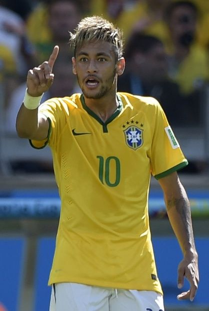 | ネイマール | 1992年2月7日 ブラジル |
本大会のブラジル代表のエースとして活躍した選手。ブラジル代表にとって本大会は自国開催ということもあり、国民から優勝が期待される中迎えた大会となったが、ネイマール自身4ゴールを挙げるなどエース名に恥じない プレーを続けたが、準々決勝のコロンビア戦で相手選手のファールにより、骨折しチームから離脱することとなった。また、チーム自体も準決勝でドイツに1-7と大敗し、ネイマールと代表チームにとって苦い大会となった。 |
| 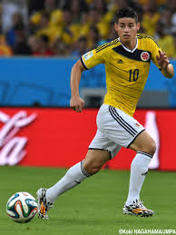 | ハメス・ロドリゲス | 1991年7月12日 コロンビア |
コロンビア代表の司令塔して同国のベスト8進出に大きく貢献にた選手。本大会では5試合で6ゴール4アシストという記録を残し、得点王に輝いた。また、得点王に輝くだけに留まらず、決勝トーナメント1回戦のウルグアイ戦で 決めたゴールが大会ベストゴールに、2014年のFIFAプスカシュ賞に選ばれた。本大会の活躍が認められ、大会終了後はスペインの強豪クラブんのレアル・マドリードに移籍している。 |
2018年大会名手たち
| 写真 | 氏名 | 生年月日 国籍 |
主な活躍 |
|---|---|---|---|
| 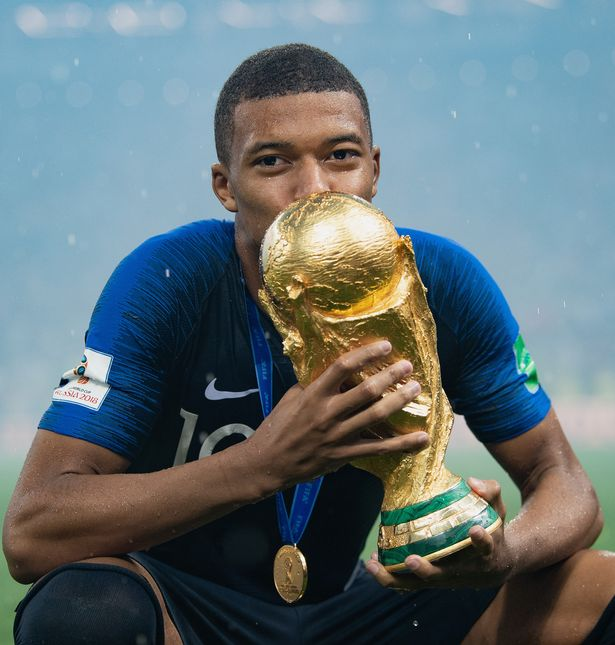 | キリアン・ムパッペ | 1998年12月20日 フランス |
本大会は19歳という若い年齢でエースナンバー10を背負ってフランス代表優勝に大きく貢献した選手。決勝トーナメント1回戦でメッシ擁するアルゼンチン代表激闘したが、2ゴールを決めるなど活躍し、また決勝戦のクロアチア戦でも ミドルシュートを決め本大会で4ゴール決めた。10代の選手がワールドカップ決勝に出場するのは史上3人目で決勝でゴールを決めたのはサッカーの王様ペレ以来の快挙となった。 |
| 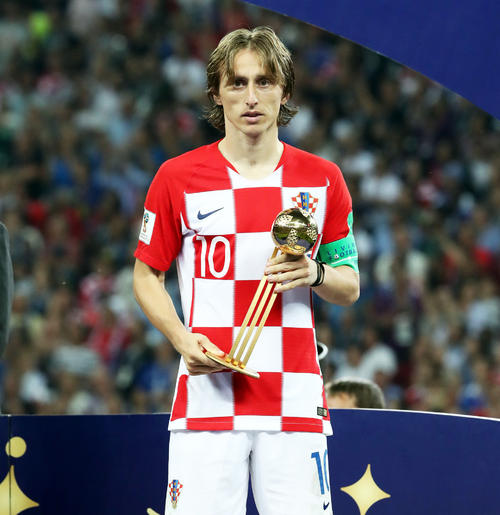 | ルカ・モドリッチ | 1985年9月9日 クロアチア |
クロアチア代表の主将、司令塔として同国の準優勝に大きく貢献した。本大会では7試合中3試合マンオブザマッチに選ばれ大活躍した。また大会最優秀選手にも選ばれ、同年のFIFAバロンドール賞受賞に繋げた。 同国では国民の英雄と崇められ、多大なる影響力を持つ選手でもある。 |
| 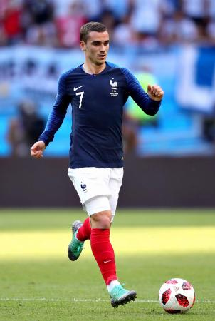 | アントワーヌ・グリーズマン | 1991年3月21日 ブラジル |
チームメートのキリアン・ムパッペとフランス代表の攻撃を牽引するだけでなく、中盤と攻撃のリンクマンとして活躍し、フランス代表の優勝に大きく貢献した選手。同大会では決勝のクロアチア戦のゴールを含む 4ゴール挙げブロンズボール賞とシルバーブーツ賞を受賞している。 |
| 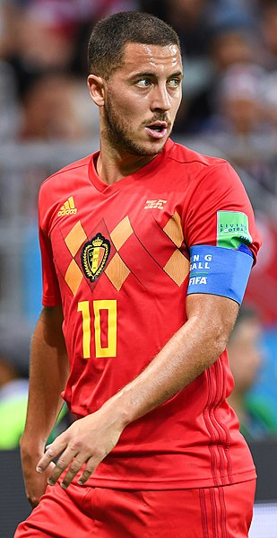 | エデン・アザール | 1991年1月7日 ベルギー |
本大会ではベルギー代表のエースとして同国の3位に大きく貢献した選手。同大会では最多タイとなる3試合でマンオブザマッチに選ばれおり、シルバーボール賞を受賞した。 |